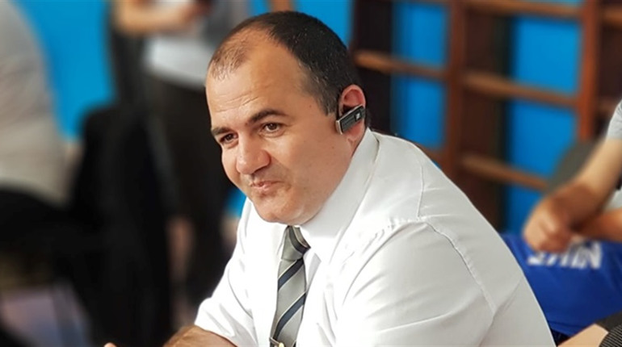

Тренери та судді
Найкращі спеціалісти, які формують майбутнє українського дзюдо. Судді з міжнародною кваліфікацією, досвідчені тренери та спортивні функціонери, відповідальні за розвиток дзюдо в Україні.
12
Тренерів
8
Суддів
4
Міжнародної категорії
Дмитро Ігнатенко
Президент Донецької обласної федерації дзюдо, член суддівської комісії Федерації дзюдо України, відповідальний за координацію суддівства в східних областях України.

Віталій Суліма
Досвідчений тренер з дзюдо, підготував більше 15 призерів міжнародних змагань. Працює з юніорською збірною України, спеціалізується на техніці кидків через спину.